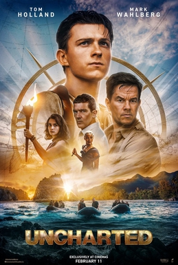

Ārpus kartes

"Ārpus kartes" (angļu: Uncharted) ir 2022. gada ASV spraiga sižeta piedzīvojumu filma, kuras režisors ir Rubens Fleišers, scenārija autori ir Reifs Lī Džadkinss, Arts Markums un Mets Holovejs. Tā veidota pēc Uncharted videospēles motīviem, ko izstrādāja kompānija Naughty Dog un izdeva Sony Interactive Entertainment. Galvenās lomas atveidojuši Toms Holands, Marks Volbergs, Sofija Ali, Tati Gabriele un Antonio Banderass. Filmā Salivans (Volbergs) savervē Dreiku (Holands) sacensībai ar korumpēto miljardieri Santjago Monkadu (Banderass) un algotņu līderi Džo Bredoku (Gabriele), lai atrastu Magelāna ekspedīcijas dārgumu.